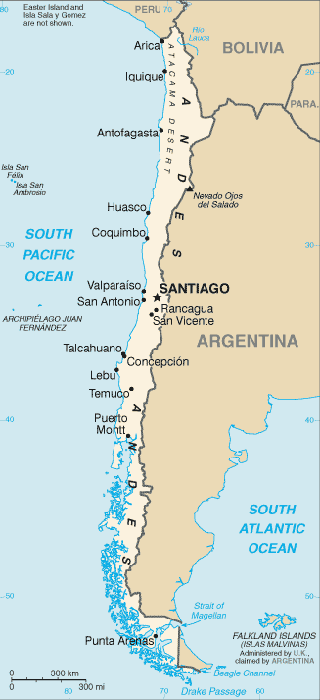

Ein Land der Gegensätze: Chile
Vulkane neben Gletschern
Chile erstreckt sich in einem langen schmalen und bergigen Streifen entlang der Südwestküste Südamerikas. Peru, Bolivien und Argentinien grenzen direkt an Chile an. Im Norden des Landes liegt die Atacama-Wüste. Sie ist eine der trockensten Regionen der Erde. In der Wüste liegen mehrere Salzseen, von denen der Salar de Atamaca der größte ist. Im Süden gibt es sogar Gletscher. Im ganzen Land findet man außerdem Vulkane.
Die schönsten Expeditionsgipfel in Chile:
- Ojos del Salado (6893m)
- Parinacota (6342m)
- Acotango (6052m)

Zurück